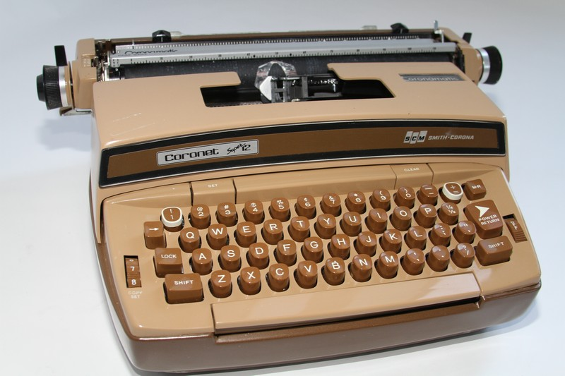

Almost a Prerequisite
Contents
Almost a Prerequisite#
Learn to Type
I often end up rewriting. Sometimes I do that without ever finding the bug. I get to the point where I can just feel that it’s in this part here. I’m just not very comfortable about this part. It’s a mess. It really shouldn’t be that way. Rather than tweak it a little bit at a time, I’ll just throw away a couple hundred lines of code, rewrite it from scratch, and often then the bug is gone. Sometimes I feel guilty about that. Is that a failure on my part? I didn’t understand what the bug was. I didn’t find the bug. I just dropped a bomb on the house and blew up all the bugs and built a new house. In some sense, the bug eluded me. But if it becomes the right solution, maybe it’s OK. You’ve done it faster than you would have by finding it.
Peter Norvig, computer scientist and pioneer in artificial intelligence
Coding is Tactile#
Below is, with some slight differences, the typewriter I purchased in high school and used for almost a decade. (Mine used a manual carriage return. Electric return was, to my thinking, far too advanced.)
Many my age or a tad younger will recall the purchase of a Commodore or Apple in the very early days of personal computing. I had no such luck. But what I lacked in access to ‘technology’ I, in some ways, made up for by learning to touch type and do so quickly.
You may not think it important, but it makes a gargantuan difference in your coding work.
The code you, the programmer, must type (i.e., source code) might be hundreds of lines for a simple program. Then, when you think you have it all, a bug appears. You fix it, or so you think. Hours pass. You spend so much time on the bug that you think starting from scratch would be more efficient. Hours go by and you have a re-built program but after wearing down your keyboard.
That is, you’ll be doing a lot of typing.
So much so that the ability to code — without having to look at the keyboard or hunt and peck with just any finger that’s available — will take away just another frustration of the process and, importantly, will allow your mind to focus on the task at hand (and at your fingertip) rather than on the tedious labor one chicken peck after another.
The benefit of learning the basic finger:key mapping is one you cannot appreciate until you have both a great deal to code but poor keyboarding skills. When you can type and type well, you’ll be less hesitant to test and re-test coding tests, drills, experiments, whatever.
That’s all to say that coding is as much a manual labor as it is a mental one, and you’ll learn by your tactile sense as well as your sense of design and your aptitude for problem-solving.
In coding, keyboarding, i.e., the manual effort to put code to text, is, for most mere mortals, an essential skill.
Learn to type properly, i.e., with proper form and all 10 fingers.